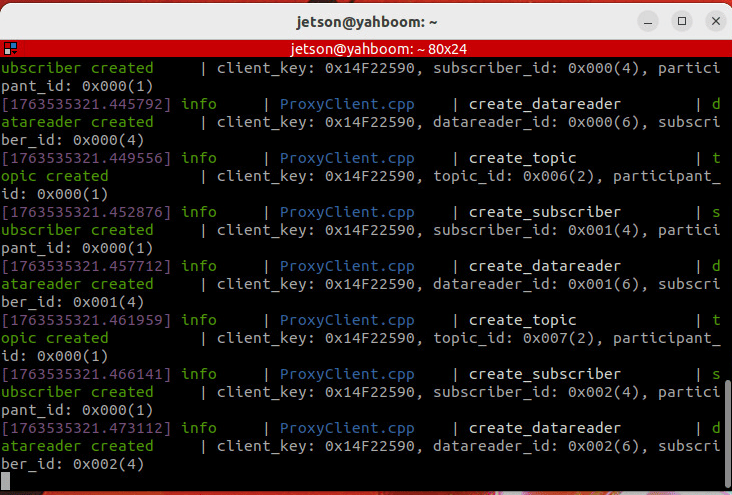
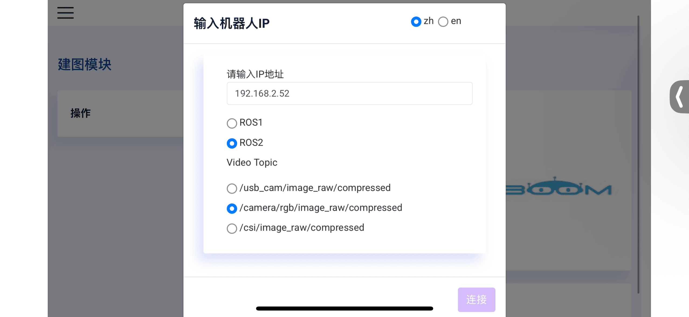

Избегание препятствий с помощью лидара
1. Описание содержания
В этом разделе описано, как программа объединяет управление шасси с объединёнными данными лидара для обнаружения препятствий в реальном времени во время движения робота вперёд и для поворота робота с целью их объезда на основе их расположения.
В этом разделе команды вводятся в терминале. Какой терминал открывать, зависит от типа используемой материнской платы. В качестве примера здесь используется Raspberry Pi 5. Для материнских плат Raspberry Pi и Jetson-Nano необходимо открыть терминал и ввести команды для входа в Docker-контейнер. После входа в контейнер вводите команды этого раздела уже внутри него. Инструкции по входу в Docker-контейнер см. в руководстве к изделию [Robot Configuration and Operation Guide] — [Enter the Docker] (для пользователей Jetson-Nano и Raspberry Pi 5, см. соответствующий раздел).
На материнской плате Orin достаточно просто открыть терминал и ввести команды этого раздела.
2. Запуск программы
Сначала откройте терминал и введите следующую команду, чтобы запустить программы слияния и фильтрации данных лидара.
ros2 launch yahboom_M3Pro_laser laser_driver.launch.py
Далее можно обратиться к разделу руководства к изделию [5. Chassis Control] — [2. Handle Control], чтобы запустить управление с геймпада для удобного управления роботом. Нажмите кнопку R2 на геймпаде, чтобы отменить и запустить режим избегания препятствий с помощью лидара. Если управление с геймпада не запущено, это не влияет на работу данной программы. Введите в терминале следующую команду, чтобы запустить программу избегания препятствий с помощью лидара:
ros2 run yahboom_M3Pro_laser laser_Avoidance
После запуска, как показано на рисунке ниже, лидар будет выводить информацию об обнаружении окружающих препятствий и управлять движением робота.

Если препятствий нет, робот едет прямо вперёд; если препятствие слева, робот поворачивает вправо, чтобы объехать препятствие, и продолжает движение вперёд; если препятствие справа, робот поворачивает влево, чтобы объехать препятствие, и продолжает движение вперёд.
Заданная в программе дистанция обнаружения препятствия составляет 0.825 метра, а угол обнаружения лидара — 45 градусов влево и вправо от направления 0 градусов. После слияния данных двух лидаров данные лидара на угле 0 градусов соответствуют направлению вперёд робота, левая половина робота — это диапазон 0–180 градусов, правая половина — диапазон -180–0 градусов. Отсчёт углов лидара начинается с 0 градусов и идёт против часовой стрелки, как показано на рисунке ниже.

3. Анализ основного кода
Путь к коду программы:
- Материнские платы Raspberry Pi и Jetson-Nano
Код программы находится внутри запущенного Docker-контейнера. Путь в контейнере:
/root/yahboomcar_ws/src/yahboom_M3Pro_laser/yahboom_M3Pro_laser/laser_Avoidance.py
- Материнская плата Orin
Путь к коду программы:
/home/jetson/yahboomcar_ws/src/yahboom_M3Pro_laser/yahboom_M3Pro_laser/laser_Avoidance.py
Импорт необходимых библиотек:
#ros lib
import rclpy
from rclpy.node import Node
from geometry_msgs.msg import Twist
from sensor_msgs.msg import LaserScan
#commom lib
import math
import numpy as np
import time
from time import sleep
from yahboom_M3Pro_laser.common import *
import os
Программа инициализируется и создаёт публикаторы (publishers) и подписчиков (subscribers):
def __init__(self,name):
super().__init__(name)
#create a sub
#Создаём подписчика на топик объединённых данных лидара
self.sub_laser=self.create_subscription(LaserScan,"/scan",self.registerScan,1)
#Создаём подписчика на топик управления с геймпада
self.sub_JoyState = self.create_subscription(Bool,'/JoyState',self.JoyStateCallback,1)
#create a pub
#Создаём публикатора для топика скорости
self.pub_vel = self.create_publisher(Twist,'/cmd_vel',1)
#declareparam
#Линейная скорость движения вперёд
self.declare_parameter("linear",0.3)
self.linear = self.get_parameter('linear').get_parameter_value().double_value
# Угловая скорость поворота
self.declare_parameter("angular",1.0)
self.angular = self.get_parameter('angular').get_parameter_value().double_value
# Угол обнаружения лидара
self.declare_parameter("LaserAngle",45.0)
self.LaserAngle = self.get_parameter('LaserAngle').get_parameter_value().double_value
#Дистанция обнаружения препятствия. Если расстояние меньше этого значения, считается, что есть препятствие.
self.declare_parameter("ResponseDist",0.55)
self.ResponseDist = self.get_parameter('ResponseDist').get_parameter_value().double_value
#Счётчик препятствий справа
self.Right_warning = 0
#Счётчик препятствий слева
self.Left_warning = 0
#Счётчик препятствий спереди
self.front_warning = 0
#Флаг управления с геймпада. Значение True означает, что роботом управляет геймпад; чтобы включить управление с геймпада, нужно нажать кнопку R2 на геймпаде
self.Joy_active = False
#Пороговое значение счётчика препятствий. Превышение этого значения означает, что впереди в зоне обнаружения есть препятствие.
self.conut = 10
Функция обратного вызова registerScan для топика лидара:
def registerScan(self, scan_data):
if not isinstance(scan_data, LaserScan): return
ranges = np.array(scan_data.ranges)
self.Right_warning = 0
self.Left_warning = 0
self.front_warning = 0
for i in range(len(ranges)):
#Переводим радианы из данных топика лидара в градусы
angle = (scan_data.angle_min + scan_data.angle_increment * i) * RAD2DEG
#Если угол больше 0 и меньше 45 градусов, либо меньше -45 и больше 0 градусов,
#и расстояние на этом угле меньше 1.5-кратного заданного расстояния, считается, что впереди есть препятствие.
if abs(angle) < self.LaserAngle and ranges[i] !=0.0:
if ranges[i] <= self.ResponseDist*1.5:
self.front_warning += 1
#Если угол больше 45 и меньше 90 градусов, и расстояние на этом угле меньше 1.5-кратного
#заданного расстояния, считается, что препятствие слева.
if angle < (90 - self.LaserAngle) < 90 and angle > 0 and ranges[i] !=0.0:
if ranges[i] <= self.ResponseDist*1.5:
self.Left_warning += 1
#Если угол больше -90 и меньше -45 градусов, и расстояние на этом угле меньше 1.5-кратного
#заданного расстояния, считается, что препятствие справа.
if angle < (90 - self.LaserAngle) < 90 and angle>0 and ranges[i] !=0.0:
if ranges[i] <= self.ResponseDist*1.5:
self.Left_warning += 1
#Если self.Joy_active равно True, публикуем скорость останова и выходим из этой функции обратного вызова
if self.Joy_active:
self.pub_vel.publish(Twist())
return
twist = Twist()
#На основе счётчиков препятствий спереди, слева и справа определяем, с какой стороны есть препятствия,
#и публикуем топик скорости в соответствии с результатом.
if self.front_warning > self.conut and self.Left_warning > self.conut and self.Right_warning > self.conut:
print ('1, there are obstacles in the left and right, turn right')
twist.linear.x = self.linear
twist.angular.z = -self.angular
self.pub_vel.publish(twist)
sleep(0.2)
elif self.front_warning > self.conut and self.Left_warning <= self.conut and self.Right_warning > self.conut:
print ('2, there is an obstacle in the middle right, turn left')
twist.linear.x = 0.0
twist.angular.z = self.angular
self.pub_vel.publish(twist)
sleep(0.2)
if self.Left_warning > self.conut and self.Right_warning <= self.conut:
twist.linear.x = 0.0
twist.angular.z = -self.angular
self.pub_vel.publish(twist)
sleep(0.5)
elif self.front_warning > self.conut and self.Left_warning > self.conut and self.Right_warning <= self.conut:
print ('4. There is an obstacle in the middle left, turn right')
twist.linear.x = 0.0
twist.angular.z = -self.angular
self.pub_vel.publish(twist)
sleep(0.2)
if self.Left_warning <= self.conut and self.Right_warning > self.conut:
twist.linear.x = 0.0
twist.angular.z = self.angular
self.pub_vel.publish(twist)
sleep(0.5)
elif self.front_warning > self.conut and self.Left_warning < self.conut and self.Right_warning < self.conut:
print ('6, there is an obstacle in the middle, turn left')
twist.linear.x = 0.0
twist.angular.z = self.angular
self.pub_vel.publish(twist)
sleep(0.2)
elif self.front_warning < self.conut and self.Left_warning > self.conut and self.Right_warning > self.conut:
print ('7. There are obstacles on the left and right, turn right')
twist.linear.x = 0.0
twist.angular.z = -self.angular
self.pub_vel.publish(twist)
sleep(0.4)
elif self.front_warning < self.conut and self.Left_warning > self.conut and self.Right_warning <= self.conut:
print ('8, there is an obstacle on the left, turn right')
twist.linear.x = 0.0
twist.angular.z = -self.angular
self.pub_vel.publish(twist)
sleep(0.2)
elif self.front_warning < self.conut and self.Left_warning <= self.conut and self.Right_warning > self.conut:
print ('9, there is an obstacle on the right, turn left')
twist.linear.x = 0.0
twist.angular.z = self.angular
self.pub_vel.publish(twist)
sleep(0.2)
elif self.front_warning <= self.conut and self.Left_warning <= self.conut and self.Right_warning <= self.conut:
print ('10, no obstacles, go forward')
twist.linear.x = self.linear
twist.angular.z = 0.0
self.pub_vel.publish(twist)